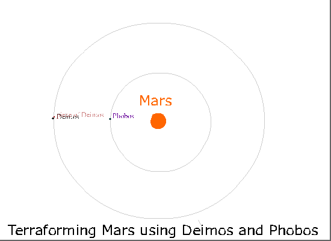

Terroforming Mars
In any case in future Mars will be terroformed. Humanity must spread to other planets. Mind must be preserved.
Here I want to share one idea terroforming Mars use Phobos and Deimos.
Which problems of Mars it can change?
Mars is very cold. The average temperature about -60 °С. The average temperature of the Earth is 15 °C. It is 75 degree difference.
Second big problem, Mars has no magnetic field.
The third big problem: there is no atmosphere on Mars
Solution
How to make Mars warmer, create an atmosphere and start a magnetic field? They offer different options, let's look at how Phobos and Deimos can be used for this. They say it is enough to raise the average temperature by 5 degrees, and the atmosphere will thicken. And it can trigger the greenhouse effect. A lot of carbon dioxide will be released into a gaseous state.
When the pressure builds up enough, and the water can be in the form of a liquid, it will be possible to inject into the soil of Mars microorganisms brought from the earth that feed on minerals and release oxygen into the atmosphere.
But how to increase the temperature by these 5 degrees, where to get the energy from? Explosions of thermonuclear bombs? Wrap Mars in mirrors? Bomb with comets?
And what if we use Phobos and Deimos for this. Calculations show that Phobos will fall on Mars and Deimos will fly away from Mars. Could they be used to heat Mars?
The simulation shows that if you drop Phobos and deimos on Mars, the average temperature of Mars will increase by 30 degrees, so you can use this energy. But it is not so easy to do this, not one rocket engine, not one bomb, will not dislodge them from their orbits. They are too heavy stones with diameters of about 12 and 23 km, and a large circular speed, 1.3513 km / s and 2.138 km / s, Deimos and Phobos, respectively.
If you shoot pieces of Deimos towards his movement, Deimos can be slowed down. Then Deimos will fall to Mars. But there is a problem, pieces shot forward, although they will partially slow down Deimos, but will not fall on Mars, They will also become new moons of Mars. This means you need to shoot towards Mars, but then Deimos will not slow down, because you will have to shoot almost perpendicular to the direction of movement. But here Phobos will help us, we will use the gravity of Phobos to turn the pieces towards Mars. If the speed of the pieces will exceed the first cosmic velocity for Phobos, These pieces flying along the hyperbola will turn and fall to the Earth. At the same time, their trajectory can be calculated so that the pieces accelerate the movement of Phobos when falling (it loses height, and in the future it can create a big problem for future Martians) And when falling, they slightly accelerate the speed of Mars so that the day on Mars coincides with the day on earth.

If you manage to drop Deimos on Mars, the temperature will rise by more than 5 degrees. At the same time, several problems can be solved: We accelerate the rotation of Mars, it will be 24 hours a day like on Earth, it will probably start moving iron core, the Martian magnetic field, much needed to protect against the harsh solar wind, will kick in. Phobos will remain in orbit longer than it was prescribed, because turning the pieces towards Mars, he himself will accelerate a little. And because Mars now has only one moon left, the rotation of the iron core will be maintained with the influence of only one Phobos.
Of the minuses, this enterprise will take a long time, it will require a lot of effort, perhaps people will have to be on Phobos, for setting up and setting up machines for ore explosions, dragging and accurate shooting. The equator of Mars has been shelled for many years, unsuitable for visiting. Natural landscapes will be destroyed.
But on the other hand, it is already available to do today. Machines on Deimos Can run on energy collected by solar panels. The second space velocity of Phobos is 11 m/s, which is about 40 km/h. It will be necessary to shoot pieces from Deimos with such a minimum speed, so that the pieces of Deimos that are cut off do not become moons of phobos. It is already possible to give the trolley a speed of 40 km/h. You will have to shoot off almost 5 percent of Deimos in order to significantly reduce its speed. Deimos spirals towards Mars and hits it.
08 May 2022